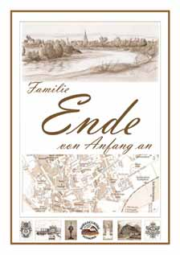
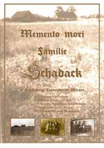
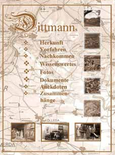
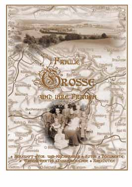

| |
|




|
Ach, der
Tugend schöne
Werke,
Die Geschichte der Familie Ende aus Bad Düben
(zur Zeit noch in Arbeit)
Vom Dez. 1980 bis März 1981 machten Karl und
Else Ende eine Reise nach Tasmanien. In diesem Tagebuch zeigt uns Karl
seine Eindrücke von diesem Kontinent, der zu damaliger Zeit (DDR) noch
schier unerreichbar für uns war.
Familie Schadack aus
Landsberg/Warthe in der Neumark (Auf Anfrage, pdf-Datei (1,7 Mb))
Die Geschichte der Familie Dittmann aus Langenroda/Großmonra (Auf Anfrage, pdf-Dokuments (10.5 MB)
Die Geschichte der Familie Große aus Reinsdorf/Rothenberga (Auf Anfrage, pdf-Datei (7,5 MB)
Der
Wille zum Gelingen, Weitere Publikationen (von Wittenförden) siehe hier:
Alles ist Fragment gewesen, was je
geschaffen worden ist.
|